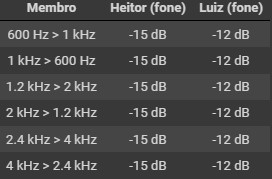

1. Objetivos
Este laboratório tem os seguintes objetivos:
- Constatar as características psicoacústicas de pessoas distintas de sensibilidade à intensidade, banda audível e mascaramento harmônico;
- Efetuar alguns procedimentos de medição e aferição acústicos e depois analisá-los.
2. Roteiro
Abaixo pode ser visualizado o roteiro original do laboratório:
3. Desenvolvimento
Para o desenvolvimento deste laboratório, foi utilizado o Jupyter Notebook fornecido e editado no Google Colab. O arquivo final pode ser visualizado neste link.
Para melhor organização, esta seção foi dividida em tópicos para abordar os temas do roteiro.
3.1. Teste de audiometria
Na primeira parte do laboratório, foi realizado um teste de audiometria pelo site hearingtest.online (Online Hearing Test and Audiogram Printout). As imagens abaixo apresentam os resultados dos testes realizados pelos membros deste grupo.
Nestas duas primeiras imagens, são exibidos os resultados de Heitor e Luiz, para o teste realizado com fone de ouvido. Os símbolos "+" representam o teste em ambos os ouvidos. Já os símbolos "X" e "O" representam, respectivamente, os resultados para o ouvido esquerdo e direito.


Nas duas imagens seguintes, são exibidos os resultados de Heitor e Luiz, para o teste realizado com caixa de som. Os símbolos "+" representam o teste em ambos os ouvidos. Não faria sentido realizar o teste em ouvidos individuais já que trata-se de um teste aberto.


Nota-se claramente uma grande diferença na sensibilidade de cada integrante do grupo. Existem vários fatores que podem influenciar no teste, como qualidade dos fones de ouvidos, ruído ambiente, ruído no sistema de áudio utilizado etc. Para uma comparação honesta, o ideal seria submeter os participantes às mesma condições e ambientes de teste. Independente disso, é notável que o Luiz apresenta maior deficiência auditiva.
3.2. Teste de faixa audível
Posteriormente, foi realizada uma verificação da faixa audível de cada membro do grupo pelo sinal sonoro disponível no link https://www.youtube.com/watch?v=H-iCZElJ8m0. Trata-se de um sinal senoidal que varia entre 20 Hz a 20 kHz. Os testes foram executados em fones de ouvido, caixas de som e celular, a fim de se verificar a variação da faixa audível por pessoa e por fonte de áudio utilizada. Os resultados podem ser vistos nas imagens abaixo.

Diferenças são notadas pela capacidade do hardware em questão de reproduzir as frequências mais baixas ou mais altas.
3.3. Teste de mascaramento de tons harmônicos
Para este teste de mascaramento, foram gerados tons conforme notebook referenciado no início do relatório. Abaixo pode-se ouví-los:
Sinal 600 Hz:
Sinal 1000 Hz:
Sinal 1200 Hz:
Sinal 2000 Hz:
Sinal 2400 Hz:
Sinal 4000 Hz:
600 Hz versus 1000 Hz - Sinais com frequência f1 mascarando f2:
1) Atenuação de tom de 600Hz por 0.0 dB
2) Atenuação de tom de 600Hz por -3.0 dB
3) Atenuação de tom de 600Hz por -6.0 dB
4) Atenuação de tom de 600Hz por -9.0 dB
5) Atenuação de tom de 600Hz por -12.0 dB
6) Atenuação de tom de 600Hz por -15.0 dB
7) Atenuação de tom de 600Hz por -18.0 dB
8) Atenuação de tom de 600Hz por -21.0 dB
9) Atenuação de tom de 600Hz por -24.0 dB
600 Hz versus 1000 Hz - Sinais com frequência f2 mascarando f1:
1) Atenuação de tom de 1000Hz por 0.0 dB
2) Atenuação de tom de 1000Hz por -3.0 dB
3) Atenuação de tom de 1000Hz por -6.0 dB
4) Atenuação de tom de 1000Hz por -9.0 dB
5) Atenuação de tom de 1000Hz por -12.0 dB
6) Atenuação de tom de 1000Hz por -15.0 dB
7) Atenuação de tom de 1000Hz por -18.0 dB
8) Atenuação de tom de 1000Hz por -21.0 dB
9) Atenuação de tom de 1000Hz por -24.0 dB
Foram gerados também sinais mascarados no padrão 1200 Hz versus 2000 Hz e 2400 Hz versus 4000 Hz. Todos os áudios podem ser verificados no notebook cujo link se encontra no início do relatório.
Finalmente, foram obtidos os seguintes resultados:

Vale destacar que ambos membros realizaram os testes com fones de ouvidos.
4. Conclusões
As conclusões parciais já foram descritas ao final de cada seção do desenvolvimento do laboratório. De maneira individual, o Heitor conclui que é possível tirar vantagem das limitações da percepção humana, especialmente em situações com mascaramento de tons, viabilizando maior compressão em arquivos de áudio. Luiz, por sua vez, ficou preocupado com sua saúde após os testes realizados e, a partir deste laboratório, diminuirá bruscamente o uso de fones de ouvido, já que isso está prejudicando sua capacidade auditiva.